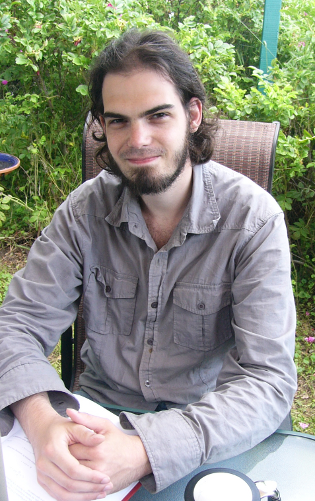

Philippe Desjardins-Proulx

I'm a computational scientist working on machine learning (a branch of Artificial Intelligence) and its application to ecology & evolution. I'm currently doing a Ph.D. at the Theoretical Ecosystem Ecology laboratory and the Quebec Center for Biodiversity Science . My work is supported by an Alexander Graham Bell Graduate Scholarship from the NSERC. You can get my short CV here.